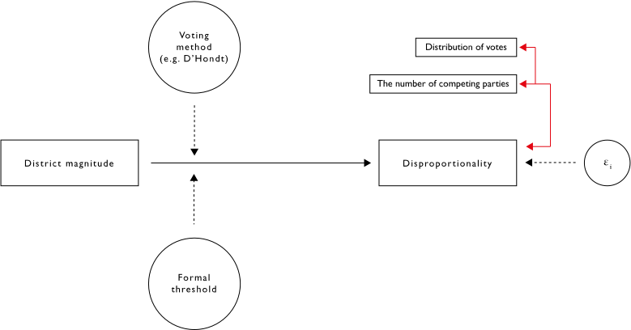
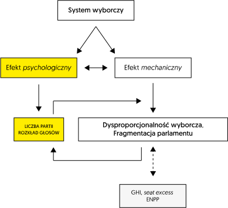

4 Rozdział: Efekt mechaniczny i psychologiczny systemu wyborczego
Electoral system has an impact on party system. We can distinguish mechanical and psychological effects of electoral systems.
4.1 Efekt mechaniczny - wpływ na dysproporcjonalność wyborów
Podstawowe zmienne: - wielkość okręgu, - formuła wyborcza, - klauzula zaporowa.

4.2 Dysproporcjonalność wyborów
\[Ghi = \sqrt{\frac{1}{2}\sum(s_i/TS-v_i/TV)^2}\]
4.3 Efekt mechaniczny i psychologiczny systemu wyborczego (2)
The psychological effect is, according to Duverger, the anticipation by voters and political actors of the mechanical effect.
Actors predict the distortion entailed by the transformation of votes into seats; they adapt their behaviour so as to make votes count (Cox 1997). This is strategic voting on the side of voters and strategic entry on the side of parties and candidates.
Electoral system has an impact on party system. We can distinguish mechanical and psychological effects of electoral systems.
4.4 Efekt mechaniczny i psychologiczny systemu wyborczego (3)
For example, when it comes to mechanical effects, we should consider (so-called) Duverger Law (Maurice Duverger - French political scientist)
Duverger’s law - plurality rule elections structured within single-member districts tend to favor a two-party system and the proportional representation tend to multipartism.
4.5 Efekt mechaniczny i psychologiczny systemu wyborczego (4)
Riker’s proposition
Plurality formulas are always associated with two-party competition except where strong local minority parties exist.
4.6 Endogeniczność
- Endogeniczność (endogeneity) - predyktory korelują z tzw. składnikiem losowym (error).
- Badając realne wyniki wyborów bardzo trudno jest odseparować efekt mechaniczny i psychologiczny; antycypowany efekt mechaniczny oddziałuje na czynniki psychologiczne.
- Podstawowe zmienne objaśniające dysproporcjonalność, czyli wielkość okręgu i formuła wyborcza korelują z liczbą konkurujących partii i rozkładem głosów.
4.7 Efekt mechaniczny i psychologiczny systemu wyborczego (3)
